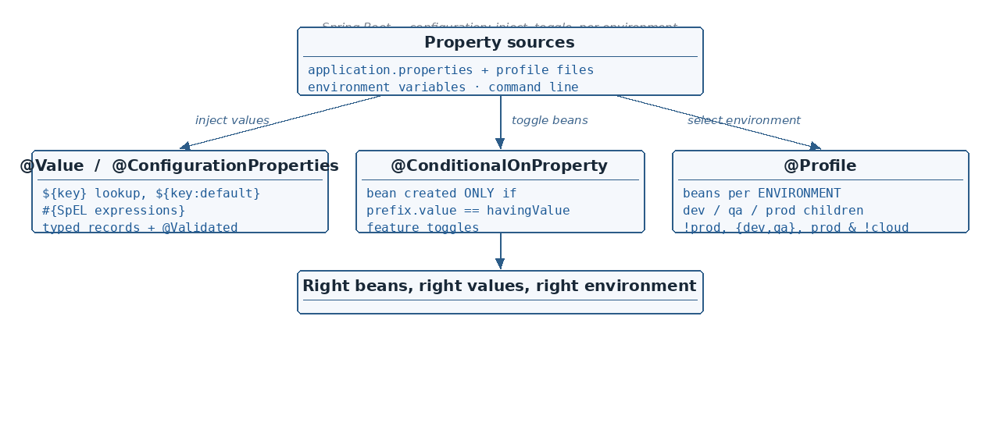

${...} vs #{...} — property placeholder vs SpEL
☕ 6 min read · 🎬 Video walkthrough · 📊 UML diagram · 💻 Runnable code
⚡ In a nutshell — Dynamically initializing bean values with @Value — property file, environment variable, inline literal · Creating beans conditionally with @ConditionalOnProperty (+ advantages & disadvantages) · Profiling: parent application.properties and child application-{profile}.properties files · Three ways to activate a profile: property, Maven -D flag, pom.xml <profiles> block
@Value is used to inject a value from various sources like a property file, environment variables, or inline literals.

# application.properties
app.name=order-service
app.timeout.ms=3000
@Component
public class AppSettings {
@Value("${app.name}") // from application.properties
private String appName;
@Value("${JAVA_HOME}") // from an environment variable
private String javaHome;
@Value("${app.retry.count:3}") // default literal used if the key is missing
private int retryCount;
@Value("42") // plain inline literal
private int magicNumber;
}
Added: when a class needs many
@Valuefields, the modern alternative is@ConfigurationProperties(prefix = "app")— it binds a whole group of keys onto one typed bean, supports relaxed binding (app.timeout-ms→timeoutMs) and validation, and IDEs auto-complete the keys.Added: a classic interview trap — the two syntaxes are different mechanisms:
${...}= property placeholder: looks up a key in the Environment (property files, env vars).#{...}= SpEL (Spring Expression Language): evaluated as an expression — math, method calls, other beans, statics.
@Value("${app.timeout.ms}") // property lookup
private int timeout;
@Value("#{2 * 60 * 1000}") // SpEL: computed value -> 120000
private int twoMinutes;
@Value("#{systemProperties['user.home']}") // SpEL: JVM system property
private String home;
@Value("#{appSettings.appName.toUpperCase()}") // SpEL: call a method on another bean
private String shoutName;
// combine them: read the property, then split it into a List
@Value("#{'${app.servers}'.split(',')}") // app.servers=a.com,b.com,c.com
private List<String> servers;
@ConfigurationProperties in codeAdded: the typed alternative to many
@Valuefields — one class per config area:
app.name=order-service
app.timeout-ms=3000 # relaxed binding: timeout-ms -> timeoutMs
app.servers=a.com,b.com
@ConfigurationProperties(prefix = "app")
@Validated
public record AppProps(
@NotBlank String name,
int timeoutMs,
List<String> servers) { // lists bind without SpEL tricks
}
@SpringBootApplication
@ConfigurationPropertiesScan // picks up AppProps (or @EnableConfigurationProperties(AppProps.class))
public class App { }
Inject AppProps like any bean. Wrong or missing values fail at startup (fail-fast), not deep in a request.
Bean is created conditionally (means the bean can be created — or not), driven by a property.
@Component
@ConditionalOnProperty(prefix = "sqlConnection",
value = "enabled",
havingValue = "true",
matchIfMissing = false)
public class SqlConnection {
// created ONLY when sqlConnection.enabled=true
}
# application.properties — the toggle the annotation reads (true/false):
sqlConnection.enabled=true
prefix + value together form the property key: sqlConnection.enabled.havingValue = "true" → the bean is created only when the property equals true.matchIfMissing = false → if the key is not present in application.properties, then don't create the bean.Since the bean may legally not exist, don't hard-fail at the injection point:
@Autowired(required = false) // if you don't find the bean it's OK —
private SqlConnection sql; // make it null and go ahead / proceed
Advantages
Disadvantages
@Profile is technically intended for environment separation rather than application-specific bean creation. What actually differs between QA / dev / prod:
How to do it? We put the configuration in application.properties — but how to handle different environment configuration? The answer is profiling.
Add this in the parent application.properties to pick the child:
spring.profiles.active=qa
Fallback rule: if property x is in application.properties but not in application-local.properties, then the value of x will be picked from the parent properties. The child only overrides what it declares.
1) Property — spring.profiles.active=qa in application.properties (above).
2) Maven command line:
mvn spring-boot:run -Dspring-boot.run.profiles=prod
prod will be prioritized even though application.properties says qa — the command line wins over the file.
3) pom.xml <profiles> block — map a Maven profile to a Spring profile:
<profiles>
<profile>
<id>local</id>
<properties>
<spring-boot.run.profiles>dev</spring-boot.run.profiles>
</properties>
</profile>
</profiles>
mvn spring-boot:run -Plocal # Maven profile "local" -> Spring profile dev
mvn spring-boot:run -Pdev
mvn spring-boot:run -Pproduction
Good to know:
-Pselects a Maven profile (build-time, frompom.xml), while-Dspring-boot.run.profilessets the Spring profile directly (runtime). Thepom.xmlblock above is the bridge between the two.
Using @Profile, we can tell Spring Boot to create a bean only when a particular profile is set.
@Component
@Profile("prod")
public class NosqlConnection {
// .....
}
But if application.properties has spring.profiles.active=qa, then this bean will not be created, since it is marked @Profile("prod").
mvn spring-boot:run -Dspring-boot.run.profiles=prod
→ now prod is prioritized even though application.properties has qa, so the bean IS created.
We can also do:
spring.profiles.active=prod,qa
With classes (1) @Profile("prod") and (2) @Profile("qa"):
Even though we are able to achieve dynamic bean creation this way, it is not a good approach —
@Profileis for environment-based configuration. For feature toggles, use@ConditionalOnProperty(section 2).Added: profile groups let one name activate a whole set — e.g.
spring.profiles.group.production=prod,prod-db,prod-mqinapplication.properties; then--spring.profiles.active=productionswitches all three on together.
Added: three details that round out
@Profile:
@Component
@Profile("!prod") // NOT prod: created in every profile except prod
public class FakePaymentGateway { }
@Component
@Profile({"dev", "qa"}) // OR: created when dev OR qa is active
public class DebugToolbar { }
@Configuration
public class DataSourceConfig {
@Bean
@Profile("dev") // @Profile works on @Bean methods too —
public DataSource h2() { // the usual way to swap infrastructure per env
return new EmbeddedDatabaseBuilder().setType(H2).build();
}
@Bean
@Profile("prod")
public DataSource postgres() {
return DataSourceBuilder.create().url("jdbc:postgresql://...").build();
}
}
! (not), & (and), | (or) — e.g. @Profile("prod & !cloud").default — beans marked @Profile("default") are created then (override the name with spring.profiles.default=...).@ConfigurationProperties(prefix="app") on a record beats scattered @Value — typed, validated (@Validated), IDE-completable, one class per config area.application.properties → profile file → OS env vars → command line. Env vars map as SPRING_DATASOURCE_URL.@ConditionalOnProperty or a flag service) for behavior toggles.spring.profiles.group.prod=prod-db,prod-mq) keep activation clean.@Value injects from property file (${app.name}), environment variables (${JAVA_HOME}), inline literals ("42"), with defaults via ${key:default}.${...} = property lookup; #{...} = SpEL expression (math, beans, statics; #{'${key}'.split(',')} → List). Many related keys → @ConfigurationProperties record with @Validated (fail-fast at startup).@ConditionalOnProperty(prefix, value, havingValue, matchIfMissing) creates a bean only when prefix.value equals havingValue; matchIfMissing=false → key absent = no bean. Pair with @Autowired(required = false).application.properties + child application-{profile}.properties; missing keys fall back to the parent.spring.profiles.active, mvn -Dspring-boot.run.profiles=prod (wins over the file), or a pom.xml <profiles> mapping used with mvn -Plocal.@Profile("prod") bean is created only under the prod profile; with active=prod,qa both beans exist and qa (last) wins duplicate values. Don't misuse @Profile for feature toggles.@Profile also works on @Bean methods and takes expressions: !prod, {"dev","qa"}, "prod & !cloud". No active profile → the default profile applies.Next topic: @Transactional — critical sections, ACID, and how Spring Boot manages transactions with AOP.
👏 Found this useful? Give it a few claps so more developers discover it, and follow for the whole series — every article ships with a UML diagram, runnable code, a narrated video, and a companion PDF. Happy building! 🚀